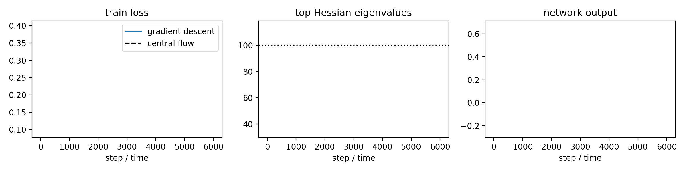
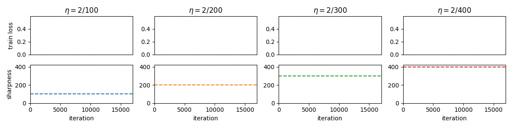

I'm currently a Research Fellow at the Flatiron Institute, in the Center for Computational Mathematics. Previously, I did a PhD in the machine learning department at Carnegie Mellon, co-advised by Zico Kolter and Ameet Talwalkar.
My research aims to connect theory and practice in deep learning. The ultimate goal is to turn deep learning from a kind of alchemy into a mature engineering discipline.
I am currently studying the dynamics of optimization in deep learning. Neural networks are trained using optimization algorithms, and understanding the behavior of these algorithms will help us understand and improve the training process.
My current email is jcohen@flatironinstitute.org. See also Google Scholar and Twitter.
Publications:
-
Understanding Optimization in Deep Learning with Central Flows.
Jeremy Cohen*, Alex Damian*, Ameet Talwalkar, Zico Kolter, and Jason D. Lee.
ICLR 2025.
This paper develops a methodology for analyzing the oscillatory dynamics of optimization algorithms in deep learning. The basic idea is to analyze an optimization algorithm by deriving a differential equation called a "central flow" that directly models the time-averaged (i.e. smoothed) trajectory of the optimizer. This differential equation renders explicit what was previously implicit in the optimizer's oscillatory dynamics.  -
Adaptive Gradient Methods at the Edge of Stability.
Jeremy Cohen, Behrooz Ghorbani, Shankar Krishnan, Naman Agarwal, Sourabh Medapati, Michal Badura, Daniel Suo, David Cardoze, Zachary Nado, George E. Dahl, and Justin Gilmer.
ArXiv 2023.
This paper shows that the edge of stability phenomenon extends to adaptive gradient methods such as Adam. -
Gradient Descent on Neural Networks Typically Occurs at the Edge of Stability.
Jeremy Cohen, Simran Kaur, Yuanzhi Li, Zico Kolter, and Ameet Talwalker.
ICLR 2021.
This paper demonstrates that full-batch gradient descent on neural network training objectives typically operates in a regime called the Edge of Stability. In this regime, the leading eigenvalue of the training loss Hessian hovers just above the value 2 / (step size), and the training loss behaves non-monotonically over short timescales, yet consistently decreases over long timescales. Since this behavior is inconsistent with several widespread presumptions in the field of optimization, our findings raise questions as to whether these presumptions are relevant to neural network training.  -
Certified Adversarial Robustness via Randomized Smoothing.
Jeremy Cohen, Elan Rosenfeld, and Zico Kolter.
ICML 2019
arXiv, Code, short ICML talk, Zico's Simons TalkExtending recent work, we show how to turn any classifier that classifies well under Gaussian noise into a new classifier that is provably robust to perturbations in L2 norm. This method is the only provable adversarial defense that scales to ImageNet. It also outperforms all other provable L2 adversarial defenses on CIFAR-10 by a wide margin. Best of all, the method is extremely simple to implement and to understand.